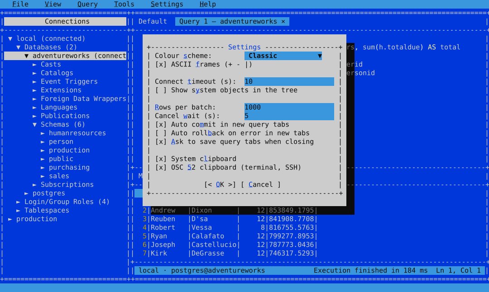
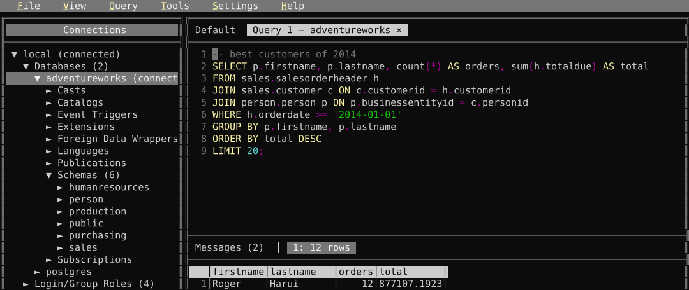
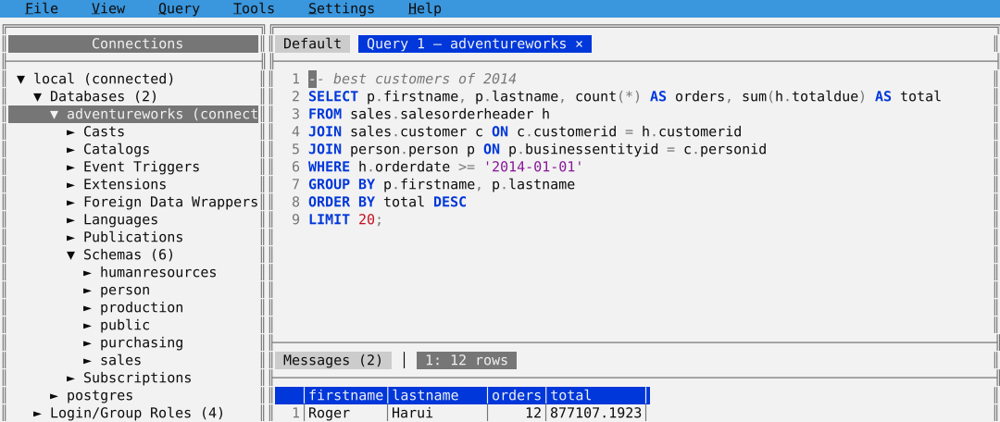
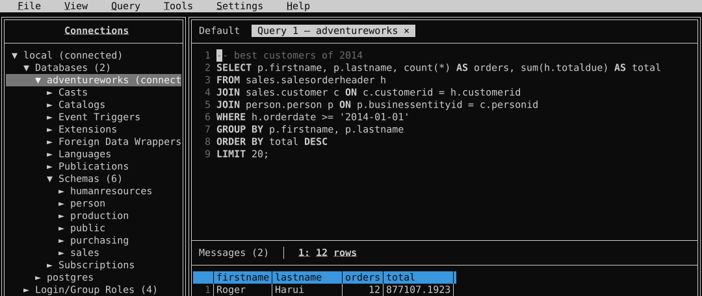
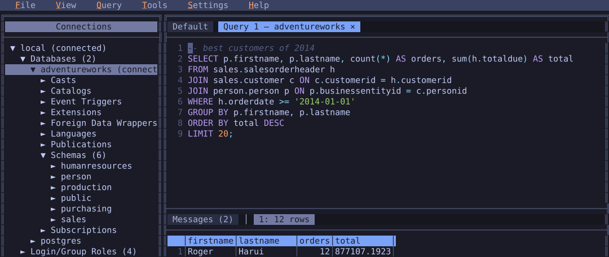

Settings, colours and keys
The Settings dialog, colour schemes, keymap.toml and settings.toml.
The Settings dialog

OK applies the values and writes settings.toml. Settings that need a note:
| Setting | Default | Note |
|---|---|---|
| Colour scheme | Classic | Previewed while you move through the list. See Colour schemes. |
| ASCII frames (+ - |) | off | See below. |
| Connect timeout (s) | 10 | connect_timeout of every session pgtc opens (1 – 3,600). |
| Show system objects in the tree | off | Adds the pg_toast and temporary schemas, template databases, the pg_* roles and extension members. Also applies to Find object. |
| Rows per batch | 1000 | Rows read before a result is paused (1 – 1,000,000). See Large results. |
| Cancel wait (s) | 5 | Time after a cancel request before pgtc offers to close the session (1 – 3,600). See Cancelling. |
| Auto commit / Auto rollback on error | on / off | Initial state of new query tabs only; open tabs keep theirs (Query menu). |
| Ask to save query tabs when closing | on | Off: unsaved text is discarded without a question — also on quit and disconnect. |
| System clipboard | on | The clipboard of the host pgtc runs on. |
| OSC 52 clipboard (terminal, SSH) | on | Copy also goes to the terminal as an OSC 52 sequence — what makes copy work over SSH (Copy and paste). Turn off if the terminal prints garbage on copy. |
ASCII frames

For terminals or fonts without line-drawing characters: all frames and lines are drawn with + - = |.
If the screen is too garbled to reach the dialog, set ascii_frames = true under [ui] in
settings.toml.
Colour schemes
| Scheme | Needs |
|---|---|
| Classic (default), Dark, Light | The 16 basic colours; their exact shades are the terminal's. |
| Terminal default | The terminal's own background, text colour and 16 colours. |
| Tokyo Night, Dracula | True colour (24-bit). Wrong or blocky colours: the terminal, the SSH client or screen / tmux does not pass it. |





Your own colour scheme
A .toml file in the themes folder appears in the list after a restart:
| Platform | Themes folder |
|---|---|
| Linux | ~/.local/share/pgtc/themes |
| macOS | ~/Library/Application Support/pgtc/themes |
| Windows | %APPDATA%\pgtc\themes |
A scheme lists only what it overrides; the rest is inherited from Classic. The built-in schemes are in the
themes folder of the source code.
name = "Green editor"
[editor]
text = "lightgreen on black"
keyword = "white on black bold"
string = "lightyellow on black"
number = "lightcyan on black"
comment = "darkgray on black italic"
selection = "black on lightgreen"
line_number = "green on black"An entry is "foreground on background", optionally followed by bold,
dim, italic, underlined, reversed.
| Colour | Write |
|---|---|
| Normal | black red green yellow (or brown) blue magenta cyan lightgray |
| Bright | darkgray lightred lightgreen lightyellow lightblue lightmagenta lightcyan white |
| The terminal's own | default |
| True colour | #rrggbb |
| Section | Entry | Colours |
|---|---|---|
[core] | normal, border | The object tree and window background; frames and lines. |
title, title_focused | The tree's title, without / with the focus. | |
selected | The cursor row of the tree and of lists, with the focus. | |
selected_unfocused | The cursor row while the focus is elsewhere. | |
hint | Quiet texts such as loading…. | |
[menu] | normal, hotkey | Menu bar, pull-down and context menus, the autocomplete list; the highlighted letters. |
selected, selected_hotkey | The highlighted item. | |
disabled | Items that cannot run now. | |
[dialog] | normal, title, hotkey | Dialog text, title, highlighted letters. |
focus, focus_hotkey | The focused button or list row. | |
input, input_focus | Input fields, without / with the focus. | |
disabled, shadow | Unusable parts; the dialog's shadow. | |
[error] | normal, title | Error messages. |
[tabs] | bar, inactive | The tab strip; tabs not shown; the file bar. |
active, active_unfocused | The shown tab, with / without the focus. | |
[status] | normal, window | A tab's status row; the bottom line of the screen. |
[editor] | text, line_number | Plain text; line numbers. |
keyword, string, number, comment, quoted_ident, operator | SQL tokens. | |
selection | Selected text. | |
[grid] | header, row_number | Column names; row numbers. |
cursor, null | The cell cursor; [null]. | |
[messages] | error, notice, info | The lines of Messages. |
[dashboard] | graph | The graphs. |
blocked, blocking, idle_in_transaction, tagged | Session rows. | |
slow, very_slow | Durations from 1 s / from 10 s; warning values of the summary. |
Changing keys: keymap.toml
| Platform | File |
|---|---|
| Linux | ~/.config/pgtc/keymap.toml |
| macOS | ~/Library/Application Support/pgtc/keymap.toml |
| Windows | %APPDATA%\pgtc\keymap.toml |
pgtc does not create the file and reads it once, at start. The actual path is at the end of .
# keymap.toml — only what differs from the built-in keys
[editor]
execute = ["F5", "Ctrl+Enter"] # two keys for one command
commit = "Alt+C" # a command that has no built-in key
rollback = "Alt+R"
[results]
export_result = "Alt+X"
[tree]
quick_search = "Alt+S" # only this key; Ctrl+S no longer searches
drop_object = [] # no key at all- A line replaces all built-in keys of that command in that section; to add a key, list both.
- A key is looked up in the section of the focused part, then in
[global]. A command used in several parts must be bound in each (executeunder[editor]and[results]). - Command names and their sections: last column of the Keyboard reference.
| Section | Focus in… |
|---|---|
[global] | any part, unless that part binds the key itself. |
[tree] | the object tree. |
[editor] | the SQL editor, an object definition, a statement pane. |
[results] | the result grid and Messages. |
[dashboard], [profiler], [db_stats] | the list of that tab. |
[dialog] | dialogs, menus and lists. |
| Key names | Write |
|---|---|
| Modifiers | Ctrl, Alt, Shift, joined with +: Ctrl+Shift+Z. Case does not matter. |
| Function keys | F1 … F24 |
| Named keys | Esc Tab Enter Space Backspace Delete Insert Home End PageUp (PgUp) PageDown (PgDn) Up Down Left Right |
| Characters | The character itself: Ctrl+E, Alt+1, Alt+/ |
- An unknown section, command or key name is skipped and reported at start; the rest of the file is used.
- The same key for two commands of one section: the later one has it, and it is reported.
- A file that is not valid TOML: pgtc starts with the built-in keys.
- Bind only keys the terminal delivers — see If a key does not work.
The settings file
settings.toml, next to keymap.toml, holds the dialog's values and the saved connections.
Settings that exist only in the file:
| Section and key | Default | Meaning |
|---|---|---|
[editor] tab_width | 4 | Display width of a tab character. |
[editor] line_numbers | true | |
[ui] tree_width | a third of the window | Columns; written when the tree's border is dragged. |
[export] format, csv_separator, csv_bom | csv, comma, false | The last choices of the export dialog. |
[ui]
color_scheme = "Dracula"
show_system_objects = false
ascii_frames = false
[query]
batch_rows = 1000
auto_commit = true
auto_rollback = false
cancel_wait_secs = 5
ask_save = true
[clipboard]
system = true
osc52 = true
[connection]
connect_timeout_secs = 10
[editor]
tab_width = 2
line_numbers = true
[ai]
enabled = true
protocol = "anthropic"
base_url = "https://api.anthropic.com"
model = "claude-sonnet-5-5"
effort = "default"
[[servers]]
name = "production"
host = "db.example.com"
port = 5432
database = "adventureworks"
username = "app"
ssl_mode = "verify-full"
ssl_root_cert = "/etc/ssl/our-ca.pem"
ai_not_allowed = true- Edit it only while pgtc is not running: pgtc rewrites it on every change of a setting or connection.
- A missing key takes its default; an unknown key is ignored.
[[servers]]: one saved connection each;databaseis the maintenance database. Passwords are in.pgpass, never here.[ai]: what saves (AI assistant) —protocolisopenai-compatibleoranthropic,effortone ofdefault,low,medium,high,xhigh,max; one[[ai.models]]block (id,name) per model read from the provider. The API key is in the fileai_keynext to it.- All locations: Reference → Files and folders.
The other items of the Settings menu
| Item | What it does |
|---|---|
| Provider, model and API key of the AI assistant. | |
As pgtc --setup; reports each step. | |
As pgtc --install-templates: copies the built-in developer templates into the templates folder; asks before overwriting. | |
| Shows the folder's path. |